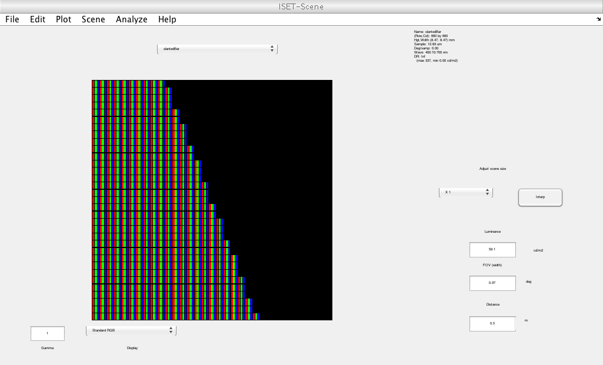
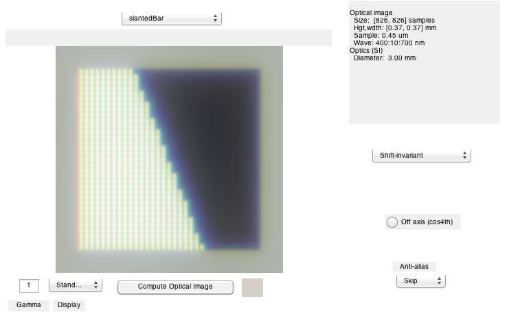
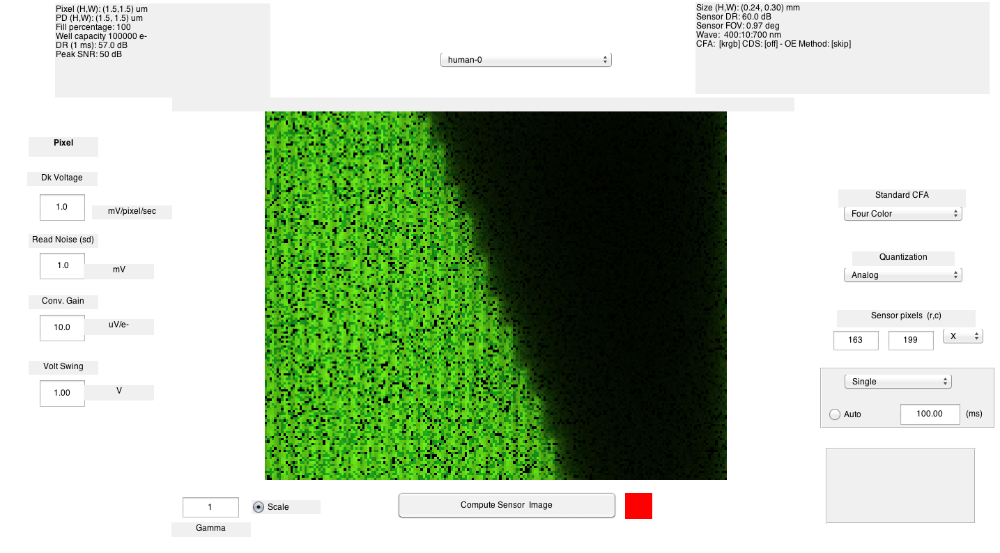

t_display2Scene
Convert an RGB image on a display into a radiometric scene (sceneWindow).
Then, render the scene through the human optics on to a human cone photoreceptor array.
(BW) ISETBIO Team, May 2014
Contents
Initialize
ieInit;
Create a small test radiometric scene
imSize = [32,32];
scene = sceneCreate('slanted edge',imSize);
Initialize a display
d = displayCreate('LCD-Apple'); d = displaySet(d,'wave',sceneGet(scene,'wave'));
Changing wave and interpolating SPD, for consistency
Calculate display radiometric image
Get the scene 'rgb' image and calculate an upsampled version for the display. The upsampling is how many spatial samples per pixel
fprintf('Spatial upsampling per pixel: %i\n',displayGet(d, 'over sample')) dRGB = displayCompute(d, sceneGet(scene,'rgb')); % Convert the rgb into a form that lends itself for spectral calculations [dRGB,r,c] = RGB2XWFormat(dRGB); spd = displayGet(d,'spd'); wave = displayGet(d,'wave'); % Convert the display radiance (energy) to photons energy = dRGB*spd'; energy = XW2RGBFormat(energy,r,c); p = Energy2Quanta(wave,energy); scene = sceneSet(scene,'cphotons',p); % Compressed photons
Spatial upsampling per pixel: 20 Spatial upsampling per pixel: 20
Adjust the scene to match the display resolution
Adjust luminance to maximum Y value of display, but divided by 2 because half the scene is black
wp = displayGet(d,'white point'); scene = sceneAdjustLuminance(scene,wp(2)/2); dist = 0.5; scene = sceneSet(scene,'distance',dist); dpi = displayGet(d,'dpi'); % Calculate scene width in meters sceneWidth = dpi2mperdot(dpi,'meters')*imSize(2); fov = rad2deg(atan2(sceneWidth,dist)); scene = sceneSet(scene,'fov',fov); % Show the upsampled radiometric scene. vcAddObject(scene); sceneWindow;
Render the scene through human optics onto the cone photoreceptor mosaic
Human optics
oi = oiCreate('human'); oi = oiCompute(oi,scene); vcAddObject(oi); oiWindow; % Human retina sensor = sensorCreate('human'); sensor = sensorSet(sensor,'exp time',0.1); sensor = sensorSetSizeToFOV(sensor,sceneGet(scene,'fov'),scene,oi); sensor = sensorCompute(sensor,oi); vcAddObject(sensor); sensorWindow('scale',1); 